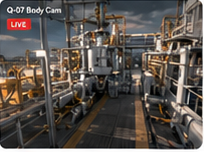
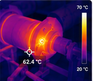
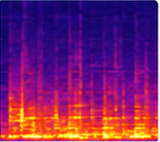
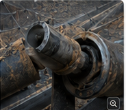
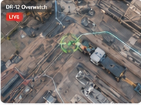
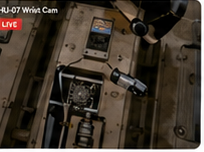
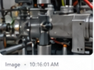
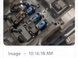
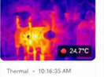

FY25 Shipments
142.6 Mt
+4.2% vs plan

| Asset Type | In Operation | Health | Readiness |
|---|---|---|---|
| Haul Trucks | 38 / 52 | Good | |
| Quadrupeds | 12 / 18 | Good | |
| Humanoids | 6 / 10 | Fair | |
| Drones | 8 / 16 | Good | |
| Support Vehicles | 30 / 32 | Good |
 New
New


Dispatch drone + edge analytics
Update CAS geofence
Optimize mission continuation
Minimize production impact
| mission_id | type | asset | site | status | risk | assignee | robot | approval_state | last_update |
|---|---|---|---|---|---|---|---|---|---|
| MS-20391CV-12 anomaly› | Inspection | Conveyor CV-12 | Processing Plant | Awaiting Review | P1 High | Alexandra R. | Q-07 / DR-12 | Awaiting Approval | 10:46 |
| MS-PTRL-6103Patrol anomaly› | Patrol Follow-up | CV-12 North Corridor | Processing Plant | Operator Review | P1 High | Site Safety Lead | QDP-14 | Evidence Gate | 11:06 |
| MS-EMG-PUMP-008Weather emergency› | Emergency Dispatch | PUMP-STN-04 | South Pit | Candidate | P0 Critical | Safety Desk | RB-HMD-02 | HITL Required | 11:12 |
| PLAN-DELTA-017Inspection replan› | Plan Change | Haul Road B / CV-12 | Mine Ops | Recalculating | Medium | Dispatcher | QDP-14 / W-12 | Awaiting Approval | 11:18 |
| INT-00842Sensor module› | Emergency Intervention | Acoustic Sensor Module | Processing Plant | Executing | P1 High | Safety Desk | HU-07 Atlas | In Review | 10:32 |
| RT-18Route override› | Route Override | AT-32 Haul Truck | Haul Road A | Blocked | High | Safety Desk | AT-32 | Blocked | 10:41 |
| MS-20402Payload transfer› | Payload Transfer | W-12 UGV | Warehouse Bay 3 | Ready | Medium | Ops Queue | W-12 UGV | Approved | 09:47 |
| MS-20407CAS watch› | Aerial Overwatch | HR-02 Light Vehicle | Haul Road C | Queued | Medium | Fleet Desk | DR-12 Drone | Awaiting Approval | 10:38 |
| MS-20388Crusher validation› | Sensor Validation | Primary Crusher CR-04 | Processing Plant | Complete | Low | Reliability | Q-11 | Approved | 09:12 |
| MS-20411Heat scan› | Heat Signature Scan | Conveyor CV-18 | Processing Plant | Scheduled | Medium | Reliability | DR-09 Drone | Pending Review | 10:51 |
| MS-20415Edge recovery› | Edge Recovery | Edge Node 08 | North Pit | Offline | High | Edge Runtime | HU-07 Atlas | Conservative | 10:32 |
QDP-14 is already on patrol at the CV-12 north corridor. The operator must review three anomaly candidates, decide whether to move closer, capture evidence, pause patrol, or create a follow-up mission.

THERMAL| Finding | Evidence | Recommendation | Status |
|---|---|---|---|
| Thermal hotspot | Thermal + visual pending | Closer inspection, then maintenance follow-up | Needs review |
| Loose guard | Visual image available | Attach to safety backlog | Evidence captured |
| Fluid leak candidate | LiDAR + low-res image | Capture high-res close-up | Operator review |
Extreme weather and a CRITICAL pump alert create an auto-dispatch candidate. The system recommends a weather-rated humanoid, but physical action remains human-approved step by step.
| Gate | Source | Decision | Evidence | Owner |
|---|---|---|---|---|
| Weather-rated mobility | Skill Registry | Pass | SKL-MOB-WTHR-012 | Autonomy |
| Physical action | Safety policy | HITL required | FMG-RUL-EMG-044 | Safety Desk |
| Full-auto physical action | Policy | Blocked | No unattended reset | Site Safety Lead |
Production plan v19 changes haul priority and blast-window preparation. The page explains affected inspections, route conflict, safe corridor choices, and the approval ledger before dispatching the new inspection plan.
| Output | Value | Downstream Update | Status |
|---|---|---|---|
| Inspection plan version | INS-PLAN-CV12-v07 | Mission Orchestration | Draft |
| Route decision | SC-HR02-B, low risk, +17 min | Spatial Intelligence | Selected |
| Hold decision | Hold MS-PTRL-6103 until blast prep clears | Command Queue | Needs approval |
CV-12 acoustic anomaly detected
High ImpactAI recommends mission plan for investigation
GeneratedAwaiting HITL approval
Awaiting ApprovalPending approval to start mission
Not StartedEvidence collection pending
Not Available| Option | Distance | ETA | Risk Score | CAS Compliance |
|---|---|---|---|---|
| Option A (Current) | 16.7 km | 18 min | Medium | Compliant |
| Option B | 18.4 km | 19 min | Low | Compliant |
| Option C | 20.1 km | 21 min | Low | Compliant |
| Policy delta appliedCAS exclusion moved from 18 m to 20 m | Pending |
| Occupancy layer stableNo drift above threshold | Verified |
| Blocked segment isolatedKP 2.41 geotech risk | Active |
Acoustic Anomaly Detected
Acoustic signature consistent with roller bearing defect on impact idler.


Inspect and replace suspected failed impact idler. Verify alignment and belt condition.
Strong acoustic impact signature with elevated energy, high temperature on idler, and rising motor current indicate mechanical degradation likely to cause failure.
Idler RPM / Speed
Belt tension
Recent maintenance history
High acoustic energy at 3.2 kHz
Thermal hotspot delta 28.7 C
Motor current trending above baseline
1. Inspect idler 18-02
2. Replace idler if defect confirmed
3. Monitor current post-repair
| EVT-2025-05-19-000198CV-12 | P1 |
| EVT-2025-05-18-000112CV-12 | P2 |
| EVT-2025-05-14-000087CV-12 | P3 |
| EVT-2025-05-10-000056CV-12 | P4 |


LIVEHU-07 Wrist Cam| Sensor visually inspected | Pass |
| No physical damage detected | Pass |
| Acoustic response within threshold | Open |



| Skill Name | Readiness | |
|---|---|---|
| Acoustic Conveyor InspectionInspection | Ready | |
| Close-range Visual VerificationInspection | Ready | |
| Heat Signature MonitoringInspection | Limited | |
| Indoor Route FollowingMobility | Ready | |
| Stair ClimbMobility | Limited | |
| Valve Handwheel OperationManipulation | Limited | |
| Payload Pick & PlaceManipulation | Ready | |
| Anomaly Detection (Visual)Perception | Ready | |
| Acoustic Leak DetectionPerception | Limited | |
| Gas Hazard AssessmentSafety | Limited | |
| Zone Access VerificationSafety | Ready | |
| Edge Fallback ExecutionEdge Autonomy | Ready |
Detects mechanical anomalies in conveyor systems using acoustic signatures. Identifies bearing wear, misalignment, and material impact events through frequency analysis and trend comparison.
| Robot Type | Readiness | Adapters / Payload | Environment Compatibility | Constraints | |
|---|---|---|---|---|---|
| Quadruped (Q-07) | Ready | Mic Array, Edge Compute | Indoor / Industrial | See constraints | ... |
| Wheeled UGV (W-12) | Ready | Mic Array, Edge Compute | Indoor / Flat Terrain | Noise < 85 dBA | ... |
| Tracked UGV (T-81) | Limited | Mic Array, Edge Compute | Indoor / Outdoor | Rough terrain limits | ... |
| Aerial Drone (D-12) | Not Supported | - | - | Acoustic accuracy low | ... |
| AT-32 Haul Truck | Simulator Only | Mic Array (Simulated) | Simulator | Simulated audio only | ... |
| Group | Active | Health |
|---|---|---|
| Haul TrucksAT-32, AT-44, AT-51 | 38 / 52 | Good |
| QuadrupedsQ-07 inspection pool | 12 / 18 | Good |
| HumanoidsHU-07 intervention | 6 / 10 | Limited |
| DronesDR-12 overwatch | 8 / 16 | Good |
| Support VehiclesLight vehicles | 30 / 32 | Good |
| Asset | Mission | Battery | Edge | CAS | Next Action | State |
|---|---|---|---|---|---|---|
| Q-07 QuadrupedInspection Mission | MS-20391 | 82% | Online | Clear | Quadruped Inspection | Ready |
| HU-07 AtlasEmergency Intervention | INT-00842 | 78% | Offline | Zone B | Acoustic Sensor Inspection | Executing |
| DR-12 Skydio X10Aerial overwatch | MS-20391 | 64% | Online | Clear | Verification flight | Standby |
| AT-32 Haul TruckHaul Road A | RT-18 | 91% | Online | Exposure | Reduce speed | Limited |
| W-12 UGVIndoor route following | MS-20402 | 88% | Online | Clear | Payload transfer | Ready |
| Evidence ID | Type | Asset | Source | Quality | Linked Mission | Status |
|---|---|---|---|---|---|---|
| ACQ-2025-05-20-102418s audio capture | Acoustic | CV-12 | D-12 Drone | High anomaly | MS-20391 | Review |
| THM-2025-05-20-1025Thermal JPG | Thermal | CV-12 | HU-07 Wrist | Verified | INT-00842 | Verified |
| IMG-2025-05-20-1026Visual PNG | Visual | CV-12 | Q-07 Body | Verified | MS-20391 | Verified |
| SCADA-2025-05-20-1024Current trend CSV | SCADA | Primary Crusher | Plant Historian | Partial | MS-20391 | Partial |
| Domain | Open | Risk |
|---|---|---|
| CAS Exclusion20 m around active operations | 8 | High |
| Mission ApprovalHITL before execution | 11 | Med |
| Edge FallbackOffline conservative mode | 3 | High |
| Skill ReadinessPayload and validation checks | 4 | Med |
| Evidence CloseoutQuality and lineage gates | 6 | Info |
| Rule ID | Scope | Trigger | Decision | Reviewer | Time |
|---|---|---|---|---|---|
| FMG-RUL-INS-017Inspection safety | CV-12 | Acoustic anomaly | Approval Required | Alexandra R. | 10:46 |
| FMG-RUL-CAS-020CAS exclusion | AT-32 | Zone B exposure | Blocked | Safety Desk | 10:41 |
| FMG-RUL-EDGE-008Fallback runtime | HU-07 | Edge offline | Conservative | Edge Runtime | 10:32 |
| FMG-RUL-SKL-044Skill readiness | Q-07 | Payload match | Approved | Reliability | 10:21 |